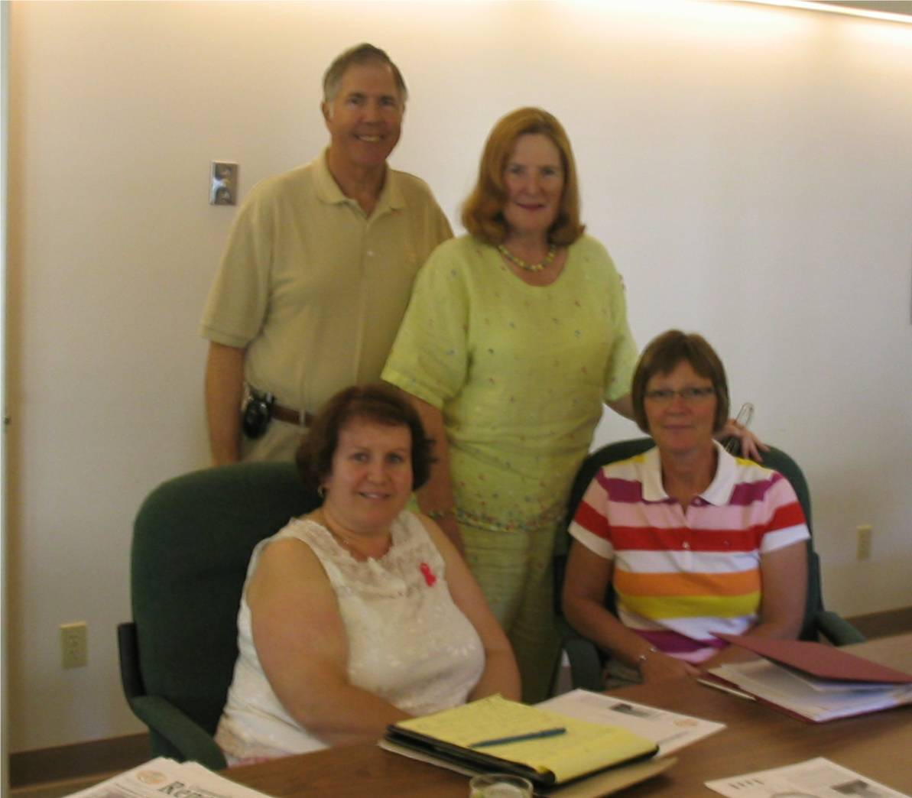

No. 75 October 26, 2007
Health Meeting

Jim and Louise Wilmot (standing) Marilyn Barrett (seated on left) Chief Nursing Officer, Community Hospitals and Continuing Care and JoAnn Chisholm (seated on right), a Director of CFPEI
I first met Jim and Louise Wilmot at the reception for US citizens on July 4, 2006. They live in Florida and have a summer home near Souris, PEI.
In mid-summer this year, we had a coffee and conversation in Charlottetown. Among other things, the Wilmots expressed a concern, shared by other US visitors in the Souris area, about the adequacy of coverage by professional staff at the Souris Hospital during the summer months.
Since then, we had two meetings with staff from the Souris Hospital, Colville Manor, Department of Health and the Regional Health authority to discuss what, if anything, can be done by way of an incentive to attract additional health care professionals to the Souris Hospital. Among other things we discussed scholarships for students in training on
condition that they return to Souris for a period of time, a signing bonus, and financial assistance for nurses in the area who wish to upgrade their qualifications.
This activity illustrates a key role of community foundations, that of bringing together people for the purpose of solving community problems.
Fund Raising
A number of organizations have approached us to provide support through the issuing of charitable receipts for fund raising activities; income derived through the initiative would then flow back to the organization doing the fund raising.
This is at odds with how community foundations normally operate. Instead, community foundations concentrate on the development of endowments and do not normally compete with other charities in traditional fund raising activities
At a recent Board meeting, CFPEI decided that it will only participate in fund raising through the writing of receipts when the funds raised are added to one of the Foundation’s existing endowments.
_______________________________________
The Community Foundation News is an informal newsletter, in electronic form only, edited and published by, and at the whim of, Don Glendenning. Think of it as a letter from a friend. Forward this to others who may be interested. For further information, check our website, www.cfpei.ca or Email me at: don@glendenning.net